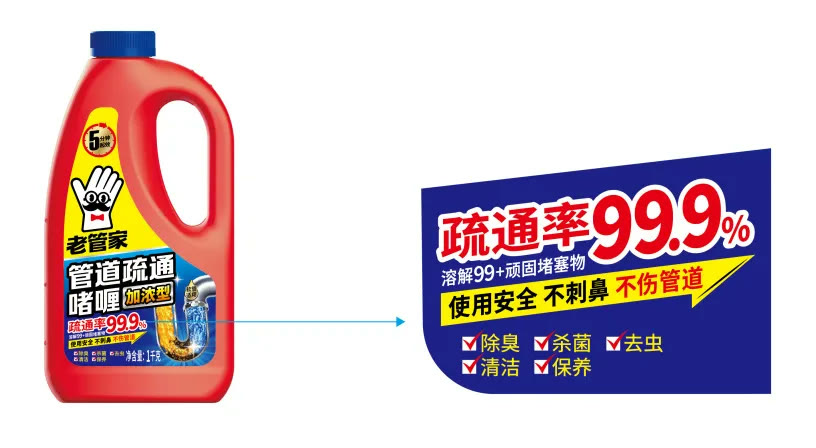

01 · 长期
流量效率之外，更要经营品牌资产
短期投放可以带来成交，但不能替代稳定认知。项目先确定能够长期重复的品牌角色与视觉。

02 · 符号
用超级手套为品牌定型
手套连接家庭清洁与劳动场景，并通过角色化设计成为老管家专属识别。

03 · 命名
让超级符号继续创造产品名称
新产品命名围绕统一角色与使用场景展开，使SKU增加时品牌认知不会被稀释。

04 · 开发
从购买理由出发参与产品开发
产品配方、形态和传播同步考虑，确保新品从诞生起就有明确使用价值与销售语言。

05 · 包装
用固定版式建立货架超级识别
包装是电商品牌覆盖最广的元媒体。稳定色块、角色与信息秩序让不同产品形成系列面积。
